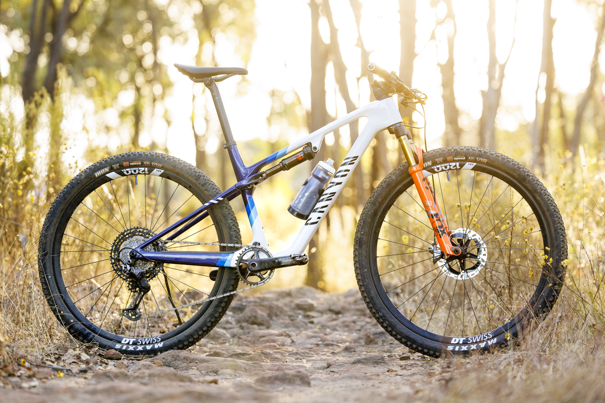
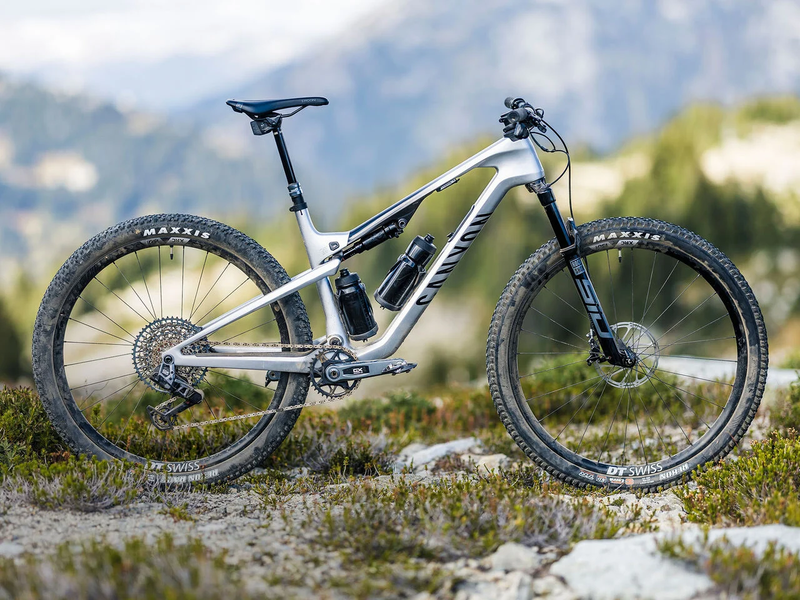

Cross Country
Cross-country mountain biking (XC) is all about speed and endurance on smooth or mildly rough trails. Riders often tackle long distances with lighter bikes designed for quick pedaling and efficiency. It’s great for people who enjoy covering a lot of ground without too much technical difficulty.

Down Country
Downcountry bikes are a mix of cross-country and trail bikes. They are designed for faster, more technical terrain, but still maintain the lightweight and efficient design of XC bikes. These bikes are perfect for riders who want to tackle tougher trails without giving up too much speed.